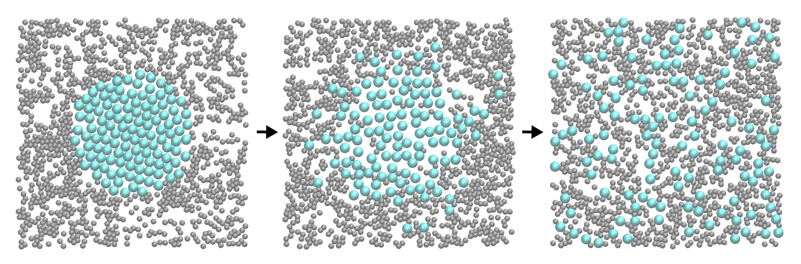
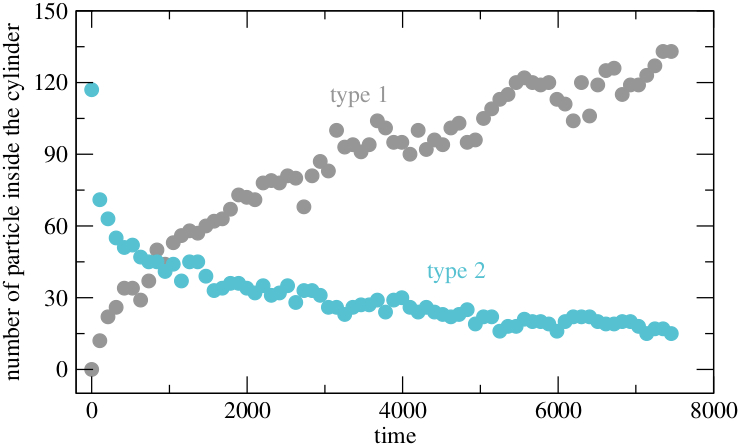

Simple molecular dynamics
The very basics of molecular dynamics through a simple example: a Lennard-Jones binary gas.

The objective of this tutorial is to use the open-source code named LAMMPS (acronym for Large-scale Atomic/Molecular Massively Parallel Simulator) to perform a simple molecular dynamics simulation. The simulation consists in a binary fluid in a 2D box (see the image below), with atoms of the fluid interacting through a simple Lennard-Jones potential. This tutorial illustrates the use of many fundamental ingredients of molecular dynamics simulations, such as system initialisation, energy minimisation, integration of the equations of motion, and trajectories visualisation. There are several parts to this tutorial:
- Software installation - Look at the required software.
- The input script - Description of the LAMMPS input file.
- Trajectories visualisation - How to visualise atoms and trajectories using LAMMPS.
- Improving the script - Making slightly more advanced script.
- Restarting from a saved configuration - How to restart a simulation from a previously save state.
Support the creation of material for LAMMPS by subscribing to my youtube channel, or making a small donation here, any amount would be really appreciated and would highly encourage me to improve this page.
If you have any suggestion about these tutorials, please contact me by email at simon.gravelle at live.fr.
Software installation
You need to download and install LAMMPS, the code that will allow us to perform molecular simulations. You can do it following the instructions of the LAMMPS website. Alternatively, if you are using Ubuntu OS, you can simply execute the following command in the terminal:
sudo apt-get install lammpsYou can verify that LAMMPS is indeed installed on you computer by typing in a terminal :
lmpAnd you should see the version of LAMMPS that has been installed. On my computer I see
LAMMPS (20 Nov 2019)In addition to LAMMPS, you will also need:
- A basic text editing software. I personally use gedit, but any text editor will do.
- A visualisation software. Here I will use VMD, its free but you have to register in order to download it. If you don't want to, you can also use Ovito.
- A plotting tool. I like XmGrace.
The input script
In order to run a simulation using LAMMPS, one needs to write a series of commands in an input script that Lammps can read. A typical input script contains four categories, which we are going to fill soon. Create a folder, and create a text file in it. Call it 'input.lammps', and copy the following lines in it:
# Initialization
# System definition
# Simulation settings
# Run
A line starting with a brace (#) is a comment that will be ignored by LAMMPS. In the first section of the script, called 'Initialization', let us indicate to LAMMPS the kind of simulation we are going to execute by specifying the most basic information, such as the conditions at the boundaries of the box (e.g periodic, non-periodic) or the type of atoms (e.g. uncharged single dots, spheres with angular velocities). Enter the following lines:
# Initialization
units lj
dimension 2
atom_style atomic
pair_style lj/cut 2.5
boundary p p p
The first line indicates that we want to use the system of unit called 'lj' for which all quantities are unitless. The second line indicates that the simulation is 2D, the third line that the atomic style will be used (therefore atoms are just a dot with a mass). The fourth line indicates that atoms are going to interact through a Lennard-Jones potential with a cut-off equal to 2.5 (unitless), and the last line indicates that the periodic boundary conditions are used along all three directions of space. It may seems strange to define the periodic boundary condition along the third dimension since we are performing 2D simulation, but it is a LAMMPS requirement. At this point, you have a LAMMPS script that does nothing. You can execute it to verify that there is no mistake by running the following command in the terminal:
lmp -in input.lammps
Which should return something like
LAMMPS (20 Nov 2019)
Total wall time: 0:00:00
If you have a mistake in your code, for example if you wrote 'atom_stile' instead of 'atom_style', LAMMPS will give you a warning:
LAMMPS (20 Nov 2019)
ERROR: Unknown command: atom_stile atomic (src/input.cpp:232)
Last command: atom_stile atomic
Let us fill the second part the of the input script:
# System definition
region myreg block -30 30 -30 30 -0.5 0.5
create_box 2 myreg
create_atoms 1 random 1500 341341 myreg
create_atoms 2 random 100 127569 myreg
The first line creates a region of space named 'myreg' that is a block (a rectangular cuboid), and goes from -30 to 30 along \(x\), -30 to 30 along \(y\), and -0.5 to 0.5 along \(z\), all expressed in non-dimensional form because we are using the `lj' system of units. The second line creates a simulation box based on the region 'myreg' with '2' types of atoms. The third command specifies that 1500 atoms of type 1 must be created randomly in the region 'myreg'. '341341' is a seed, you can give it different values to create different initial conditions for your simulations. The fourth line creates 100 atoms of type 2. If you run LAMMPS, you should see the following in the terminal:
LAMMPS (20 Nov 2019)
Created orthogonal box = (-30 -30 -0.5) to (30 30 0.5)
1 by 1 by 1 MPI processor grid
Created 1500 atoms
create_atoms CPU = 0.000807692 secs
Created 100 atoms
create_atoms CPU = 4.097e-05 secs
Total wall time: 0:00:00
From what is printed in the terminal, it is clear that LAMMPS understood the commands and created the box, then the atoms.
Let us fill the third section (settings) of the input script:
# Simulation settings
mass 1 1
mass 2 1
pair_coeff 1 1 1.0 1.0
pair_coeff 2 2 0.5 3.0
The two first commands attribute a mass equal to 1 (unitless) to atoms of type 1 and 2 respectively. The third line sets the Lennard-Jones coefficients (respectively the depth of the potential well \(\epsilon\) and the distance at which the particle-particle potential energy is zero \(\sigma\) for the interactions between atoms of type 1. The last line sets the Lennard-Jones coefficients for the interactions between atoms of type 2. By default, LAMMPS will calculate the Lennards coefficients for the interactions between atoms of type 1 and 2 by using geometric average:
\(\epsilon_{ij} = \sqrt{\epsilon_{ii} \epsilon_{jj}}\), \(\sigma_{ij} = \sqrt{\sigma_{ii} \sigma_{jj}}\).
The simulation is almost ready, we just need to fill the 'Run' section of the input script. Let us first perform a minimisation of energy:
# Run
thermo 10
minimize 1.0e-4 1.0e-6 1000 10000
The first line asks LAMMPS to print thermodynamic information (e.g. temperature, energy) in the terminal (as well as in the log file) every 10 timesteps. The second line asks LAMMPS to perform an energy minimisation of the system. An energy minimisation consists in adjusting the coordinates of the atoms until one of the stopping criteria is reached. Here there are four stopping criteria:
- 1 - The change in energy between two iterations is less than 1.0e-4,
- 2 - the maximum force between two atoms in the system is lower than 1.0e-6,
- 3 - the maximum number of iterations is 1000,
- 4 - the maximum number of times the force and the energy have been evaluated is 10000.
Now running the simulation, you should see numerous information printed in you terminal. For example, you should see the following lines (with slightly different values eventually):
Step Temp E_pair E_mol TotEng Press
0 0 5.8997404e+14 0 5.8997404e+14 1.5732641e+15
10 0 56275037 0 56275037 1.5007118e+08
20 0 17731.329 0 17731.329 47458.738
30 0 350.68529 0 350.68529 972.14134
40 0 13.745948 0 13.745948 48.748312
50 0 0.5033657 0 0.5033657 8.3398718
60 0 -1.4427524 0 -1.4427524 1.1131474
70 0 -1.7136665 0 -1.7136665 -0.038162464
80 0 -1.7516642 0 -1.7516642 -0.15686171
81 0 -1.7518285 0 -1.7518285 -0.15730928
These lines give us many information concerning the progress of the energy minimisation step. First, at the start of the simulation (step 0), the energy in the system is huge: 5.8997404e+14 (unitless). This was expected because the atoms have been created at random positions within the simulation box, and some of them are probably overlapping, resulting in a large initial energy which is the consequence of the repulsive part of the Lennard-Jones interaction potential. As the energy minimisation progresses, the energy rapidly decreases and reaches a negative, more acceptable value, indicating that the atoms have been displaced at reasonable distances from each others. Other useful information have been printed in the terminal, for example, LAMMPS tells us that the first of the four criteria to be satisfied was the energy:
Minimization stats:
Stopping criterion = energy tolerance
You may also see the following warning:
WARNING: Using 'neigh_modify every 1 delay 0 check yes' setting during minimization
There is nothing to worry about at this stage, the message is simply an indication that LAMMPS will be building the pairwise neighbour lists (that are used by LAMMPS to evaluate the interaction between atoms) more frequently than usual during the minimisation.
The system is ready, and the lines corresponding to the molecular dynamics steps can be added to the input script. In the same script, after the minimisation command, add the following lines:
fix mynve all nve
fix mylgv all langevin 1.0 1.0 0.1 1530917
fix myefn all enforce2d
timestep 0.005
thermo 1000
run 10000
For LAMMPS, a `fix' is an operation applied to a group of atoms. The first fix performs constant NVE integration (micro-canonical ensemble with constant number of atom \(N\), constant volume \(V\), and constant energy \(E\)) to update the positions and the velocities of the atoms in the group `all'. The second fix applies a Langevin thermostat to the atoms of group `all', with a desired temperature of 1 and a damping parameter of 0.1. The number '1530917' is a seed, you can change it to perform statistically independent simulations with the same system. The third fix ensures that the atoms remain within the 2D plan. Finally we choose the timestep, we ask LAMMPS to print information in the terminal every 1000 timesteps (instead of 10 during the minimisation step), and we ask LAMMPS to run for 10000 timesteps. After running the simulation, you should see the following information in the terminal:
Step Temp E_pair E_mol TotEng Press
81 0 -1.7518285 0 -1.7518285 -0.15730928
1000 1.0001038 -1.2883573 0 -0.28887856 1.0156263
2000 1.0281454 -1.3280807 0 -0.3005779 0.8047188
3000 1.0254482 -1.3054918 0 -0.28068451 0.88795845
4000 0.99949105 -1.3460791 0 -0.34721269 0.76839631
5000 1.0169355 -1.3255802 0 -0.30928026 0.7867611
6000 1.022756 -1.3368899 0 -0.31477316 0.67073269
7000 0.99475526 -1.3264244 0 -0.33229089 0.82847903
8000 1.0027712 -1.3422586 0 -0.34011418 0.73362563
9000 0.97476289 -1.3287238 0 -0.35457015 0.76153916
10000 0.97759346 -1.3218996 0 -0.34491712 0.72232437
10081 1.0136339 -1.2913059 0 -0.27830551 0.8433209
It shows that the temperature oscillates near \(T=1\), as requested. Note that the temperature starts from 0, but rapidly reaches the expected value thanks to the applied Langevin thermostat. In the terminal, you may also see
Total # of neighbors = 8560
Ave neighs/atom = 5.35
Neighbor list builds = 999
Dangerous builds = 998
Total wall time: 0:00:02
During the simulation, they have been 998 dangerous builds. This is an indication that something is wrong with the simulation, and that some atoms have moved more than expected in between two calculations of the neighbour lists. Let us add the following command in the 'Simulation settings' section:
neigh_modify every 1 delay 5 check yes
With this command, LAMMPS will rebuild the neighbour lists more often. Re-run the simulation, and you should see a more positive outcome:
Total # of neighbors = 8514
Ave neighs/atom = 5.32125
Neighbor list builds = 1152
Dangerous builds = 0
Total wall time: 0:00:02
Trajectories visualisation
We have a simulation that is running well, but we would like to visualise the trajectories of the atoms. To do so, we are going to dump the positions of the atoms in a file at a regular interval. Add the following command in the 'simulation settings' section:
dump mydmp all atom 1000 dump.lammpstrj
In you run LAMMPS again, a file named dump.lammpstrj should appear in the same folder as your input. This file can be opened using VMD, Ovito, etc. In Ubuntu, you can simply execute in the terminal:
vmd dump.lammpstrj
Otherwise, you can open VMD and open dump.lammpstrj manually using file -> molecule. You should see a cloud of lines. You can improve the representation using Graphics -> Representation, and replace Lines by Points or VDW in drawing method. What you observe should resemble this video.
Improving the script
Let us improve our input file and perform slightly more advanced operations.
Let us create the atoms of type 1 and 2 in two separate regions, respectively. Create a new input script and call it input.min.lammps where min refers to minimisation. As previously, copy the following first lines into the input script:
# Initialization
units lj
dimension 2
pair_style lj/cut 2.5
atom_style atomic
boundary p p pLet us create a box from a predefined region, and create two additional regions and generate atoms of type 1 and 2 in each region respectively.
# System definition
region mybox block -30 30 -30 30 -0.5 0.5
create_box 2 mybox
region mycylin cylinder z 0 0 15 INF INF side in
region mycylou cylinder z 0 0 15 INF INF side out
create_atoms 1 random 1000 341341 mycylou
create_atoms 2 random 150 127569 mycylinThe 'side in' and 'side out' keywords allow us to define regions that are respectively 'inside the cylinder', and 'everything that is not inside the cylinder'. We can write the remaining of the input script as follow:
# Simulation settings
mass 1 1
mass 2 1
pair_coeff 1 1 1.0 1.0
pair_coeff 2 2 0.5 3.0
neigh_modify every 1 delay 5 check yes
dump mydmp all atom 10 dump.min.lammpstrj
# Run
thermo 10
minimize 1.0e-4 1.0e-6 1000 10000
write_data data.min.lammps
A novelty with respect to the previous input script is the command 'write_data'. This command asks LAMMPS to print the final state of the simulation in a file named 'data.min.lammps'. This file will be used later to restart the simulation from the final state of the energy minimisation step.
Run LAMMPS using the input.min.lammps script. If everything goes well, a dump file named dump.min.lammpstrj should appear in the folder, allowing you to visualise the atoms trajectories during minimisation using VMD or Ovito. In addition, a file named data.min.lammps should be created. If you open this file, you will see that it contains all the information necessary to restart the simulation, such as the number of atoms and the size of the box:
1150 atoms
2 atom types
-3.0000000000000000e+01 3.0000000000000000e+01 xlo xhi
-3.0000000000000000e+01 3.0000000000000000e+01 ylo yhi
-5.0000000000000000e-01 5.0000000000000000e-01 zlo zhi
It also contains the final positions and velocities of all the atoms:
Atoms # atomic
345 1 -2.8836527978635523e+01 -2.9323791349242530e+01 0.0000000000000000e+00 0 0 0
979 1 -2.9382597284003467e+01 -2.8335352105920894e+01 0.0000000000000000e+00 0 0 0
435 1 -2.5412729704650008e+01 -2.9697644643809667e+01 0.0000000000000000e+00 0 0 0
533 1 -2.5033422381244598e+01 -2.8519424750144708e+01 0.0000000000000000e+00 0 0 0
347 1 -2.4330866813628781e+01 -2.9373591404712414e+01 0.0000000000000000e+00 0 0 0
448 1 -2.3610197298718113e+01 -2.8518785172533800e+01 0.0000000000000000e+00 0 0 0
(...)
Each column corresponds respectively to the atom index (from 1 to the total number of atoms, 1150), the atom type (1 or 2 here), the atom positions (\(x\), \(y\), \(z\)) and the atom velocities (\(v_x\), \(v_y\), \(v_z\)).
Restarting from a saved configuration
We are going to create a new input file and start a molecular dynamics simulation directly from the previously saved configuration. In the same folder, create a new file, call it input.run.lammps, and copy the same lines as previously:
# Initialization
units lj
dimension 2
pair_style lj/cut 2.5
atom_style atomic
boundary p p pNow instead of creating a new region, we simply add the following command:
# System definition
read_data data.min.lammps
By visualising the previously generated dump.min.lammpstrj file, you may have noticed that some atoms have moved from one region to the other during minimisation, as seen in this video.
In order to start the simulation from a clean state, with only atoms of type 2 within the cylinder and atoms of type 1 outside the cylinder, let us delete the misplaced atoms by adding the following commands:
region mycylin cylinder z 0 0 15 INF INF side in
region mycylou cylinder z 0 0 15 INF INF side out
group mytype1 type 1
group mytype2 type 2
group incyl region mycylin
group oucyl region mycylou
group type1in intersect mytype1 incyl
group type2ou intersect mytype2 oucyl
delete_atoms group type1in
delete_atoms group type2ou
These commands will respectively recreate the previously defined regions (regions are not saved by the write_data command), create groups, and finally delete the atoms of type 1 that are located within the cylinder, as well as the atoms of type 2 that are located outside the cylinder. If you run LAMMPS, you can see in the terminal how many atoms are in each group, and how many atoms have been deleted:
1000 atoms in group mytype1
150 atoms in group mytype2
120 atoms in group incyl
1030 atoms in group oucyl
1 atoms in group type1in
31 atoms in group type2ou
Deleted 1 atoms, new total = 1149
Deleted 31 atoms, new total = 1118
Similarly to previously, add the following simulation settings:
# Simulation settings
mass 1 1
mass 2 1
pair_coeff 1 1 1.0 1.0
pair_coeff 2 2 0.5 3.0
neigh_modify every 1 delay 5 check yes
dump mydmp all atom 500 dump.run.lammpstrj
In addition, it would be great to extract data directly from the simulation. For example, let us extract the number of atoms of each type in each region, by adding the following commands:
variable Ntype1in equal count(mytype1,mycylin)
variable Ntype1ou equal count(mytype1,mycylou)
variable Ntype2in equal count(mytype2,mycylin)
variable Ntype2ou equal count(mytype2,mycylou)
fix myat1 all ave/time 1000 1 1000 v_Ntype1in v_Ntype1ou file population1vstime.dat
fix myat2 all ave/time 1000 1 1000 v_Ntype2in v_Ntype2ou file population2vstime.dat
The fixes ave/times allow to evaluate previously defined variables and print the values (here every 1000 steps) into data file. Here each variable simply counts the number of atoms of a specific group in a specific region. Finally, let us terminate the script by adding:
# Run
velocity all create 1.0 4928459 mom yes rot yes dist gaussian
fix mynve all nve
fix mylgv all langevin 1.0 1.0 0.1 1530917 zero yes
fix myefn all enforce2d
timestep 0.005
thermo 50000
run 1500000
There are a few differences with the previous input script. First, the 'velocity create' command attributes and initial velocity to all the atoms. The initial velocity is chosen so that the initial temperature is equal to 1 (unitless). The additional keywords ensure that no linear momentum and no angular momentum are given to the system, and that the generated velocities are distributed as a Gaussian. Another difference is the 'zero yes' keyword in the langevin thermostat, that ensures that the total random force is equal to zero.
After running the simulation, you can observe the number of atoms in each region from the generated data files, using for example Xmgrace:

The final simulation should resemble this video.
You can download the input scripts that have been written in this tutorial by clicking here.
Going further
Playing around. A good way to master LAMMPS and molecular dynamics simulations is to play around with a script that is already working, and observe the differences and/or errors occurring. For example, with our current input file, we can explore what appends if we don't perform a minimisation step and start the molecular dynamics directly. To do so, comment the two following lines:
# thermo 10
# minimize 1.0e-4 1.0e-6 1000 10000
If you run LAMMPS again, you should get something like:
Step Temp E_pair E_mol TotEng Press
0 0 5.8997404e+14 0 5.8997404e+14 1.5732641e+15
ERROR: Lost atoms: original 1600 current 272 (src/thermo.cpp:438)
Last command: run 10000
The message indicates that LAMMPS lost some of the atoms, then stopped. This is one of the most common error message that you will see. It is usually the consequence of badly constructed system or inappropriate dynamics. In the present case, atoms are too close to each others initially, so they apply forces on each others that are huge, leading to enormous acceleration. As a consequence, atoms are moving by large distances during the firsts timesteps, and LAMMPS loses them.
Dealing with the Lost atoms error. They are several ways of dealing with the lost atoms error, such as performing minimisation of energy (as we did), or using a smaller timestep together with a thermostat with strong damping. If you have trouble understanding why this error is occurring in your system, you can use
thermo 1
and
dump mydmp all atom 1 dump.lammpstrj
This way you may be able to visualise the very first steps, and identify the location of the error.
Bonus exercise. Use the 'addforce' command to generate a flow of particles in one direction:
fix ID group-ID addforce fx fy fz
where \(f_x\), \(f_y\), and \(f_z\) are the force component values. The final simulation should resemble this video.
Support the creation of material for LAMMPS by subscribing to my youtube channel, or making a small donation here, any amount would be really appreciated and would highly encourage me to improve this page.